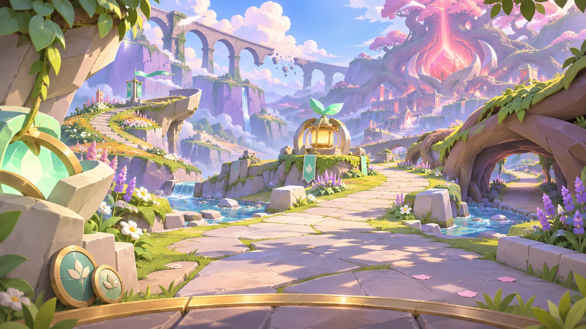
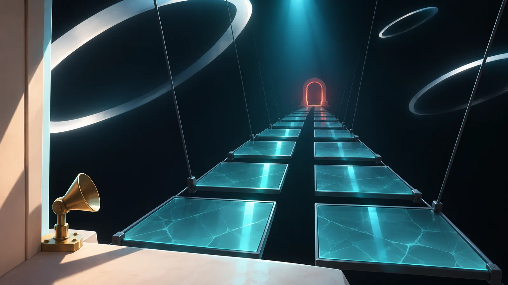
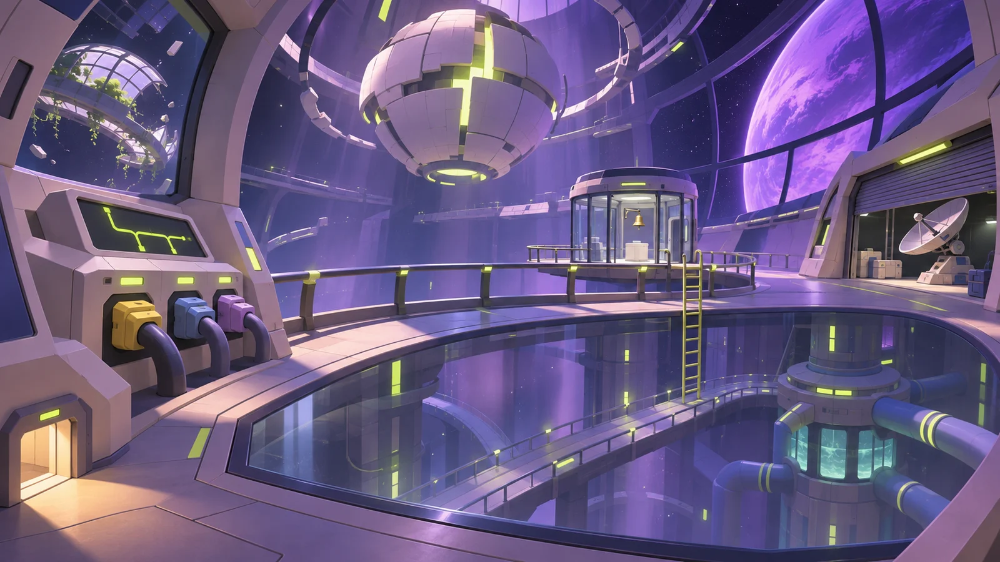
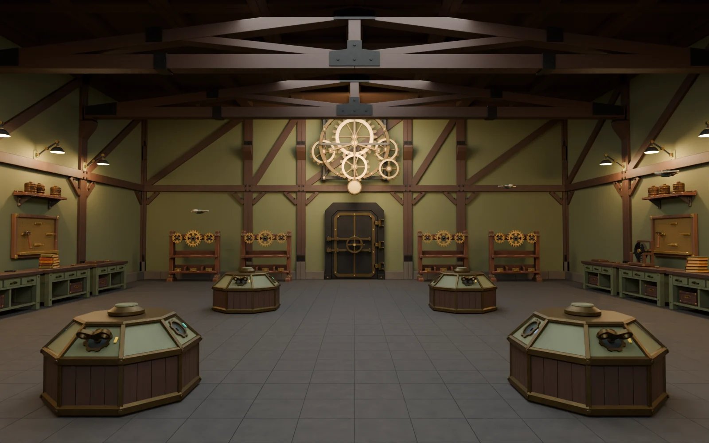

CURRENT COLLECTION
문 하나 너머, 전혀 다른 세계
미니언 전장, 끝없는 절벽, 심연의 유리다리. 공간의 모양부터 다르게 만듭니다.
문 안에 펼쳐지는 세계는 방마다 완전히 다릅니다. 아래 여섯 장은 새 공간 컨셉이며, 현재 게임에 이 모습으로 구현된 화면은 아닙니다. 외형·치수·배치는 검토 중입니다.
미니게임 규칙 따로 보기 ↗미니언이 된 우리
영웅을 조종하는 대신 우리가 작은 미니언이 되어 거대한 전장에 들어간다.

분위기살구빛 낮 · 민트와 코랄 진영 · 라벤더 절벽
기능 구역각 진영 씨앗 코어 · 전선을 지키는 등불 포탑 · 낮은 개울 건널목 · 거대한 뿌리 아래 우회로
끝없는 절벽 구조대
방의 문을 열었는데 산이 위아래로 끝없이 이어지고, 손을 놓으면 아래에는 아무것도 보이지 않는다.

분위기차가운 하늘과 흰 암벽 · 주황 구조 로프 · 바닥 없는 구름
기능 구역작은 도착 턱 · 손잡이와 균열로 오른 수직 면 · 로프 고정 휴식 턱 · 정상 구조 신호
심연의 유리다리
평범한 문 뒤에 유리판만 떠 있고, 목적지는 어둠 건너편에 작게 보인다.

분위기푸른 유리 반사 · 코랄 출구 · 비어 있는 검은 하부
기능 구역출발 단상과 청음 장치 · 좌우 선택 유리 발판 · 길과 무관한 먼 고리 구조 · 작은 출구 문
고장 난 궤도 정비실
방 안쪽이 거대한 우주 정거장이고, 다른 층의 동료를 유리 너머로 의심하며 본다.

분위기백색 세라믹 · 보라색 행성 · 연두 상태등
기능 구역중앙 부유 동력원 · 하부 냉각 연결부 · 통신 수리 구역 · 중앙 신호종과 투표실
불 꺼진 발전소
같은 길도 조용한 고무 통로와 소리가 나는 물길 중 무엇을 택하느냐에 따라 위험이 달라진다.

분위기어두운 녹색 · 작은 호박빛 피난처 · 물소리와 긴 그림자
기능 구역퓨즈 보관 벽감 · 중앙 마른 발전기 섬 · 낮은 배관 우회로 · 터빈 우물과 출구 철문
끝없이 울리는 종탑
멀리서 벌레 떼가 밀려오고 우리는 넓은 곡선 길을 돌며 공격과 구조를 이어간다.

분위기보랏빛 밤 · 연분홍 땅 · 민트 집결등
기능 구역낮은 꽃잎 분지 · 개방된 돌 언덕 · 무너진 종 아치 · 높은 집결등과 먼 종
현재 제작 중인 네 방
기존 방의 유지 중인 아트와 모델 조립입니다. 새 세계 시안과 제작 단계가 다릅니다.
거짓말 살롱
이번 문양을 확인 → 카드를 뒤집어 내며 수량 선언 → 다음 사람이 믿거나 거짓말 지적 → 마지막 제출 공개


아트 조립 후보와 게임 속 살롱은 크기가 다릅니다. 최종 공간 통합은 남아 있습니다.
이 방의 오브젝트 보기 →태엽 공방
흩어진 톱니를 소켓에 운반하고 네 손잡이를 맞춰 감는다



게임에 벽·바닥·천장·주요 소품을 반영했습니다. 최종 배치와 장치 동작은 계속 다듬습니다.
이 방의 오브젝트 보기 →압력실
밸브를 조절해 변동하는 압력 바늘을 안전 범위에 유지한다


게임에 밸브·보일러·배관·정비 구역을 반영했습니다. 벽·바닥·천장과 최종 조명은 작업 중입니다.
이 방의 오브젝트 보기 →분실물실
둘씩 팀을 이뤄 무게와 모양에 맞는 소포를 분류한다


28개 품목 중 28개가 준비된 아트 인계입니다. 방 전체 조립과 새 모델의 게임 반영은 별도이며 완료로 표시하지 않습니다.
이 방의 오브젝트 보기 →